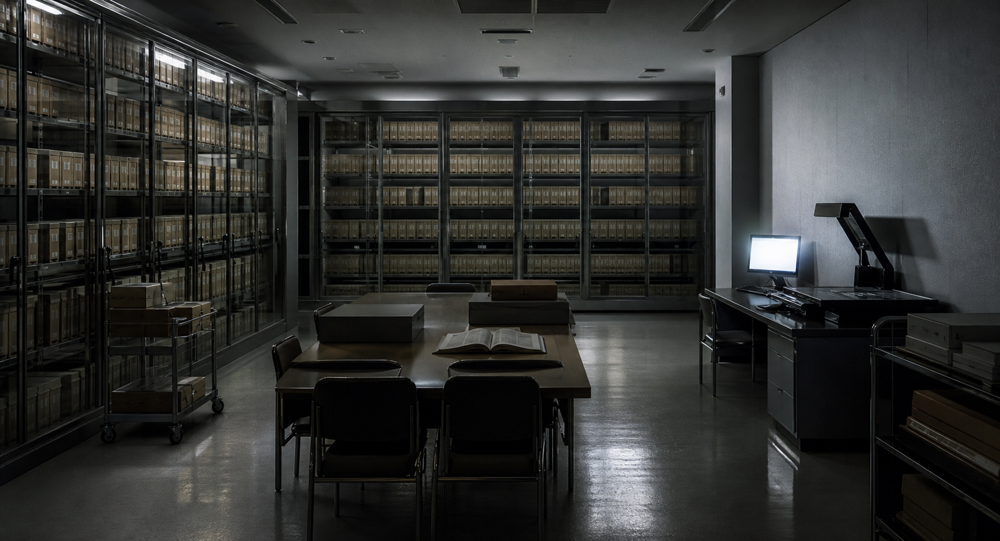

調査対象
目録、改訂履歴、欠番資料の3点を軸に資料を読む。
PUBLIC FACE / PRIVATE NOISE
欠番目録の画像名。公式の表情、検索に残った痕跡、匿名掲示板のざわめきを照合し、公開資料だけで違和感の芯を探してください。

斑鳩公文書館の公開目録で、同じ文書番号が二つの別資料に割り当てられていた。閲覧請求は正常に処理されているが、返却印だけが一日先の日付になっている。
あなたは目録修正前の確認として、索引、閲覧票、保存箱ラベルを読み比べる。番号の重複は単純な入力ミスなのか、それとも誰かが資料を差し替えた跡なのか。
目録、改訂履歴、欠番資料の3点を軸に資料を読む。
公式ページの説明は整っているが、外部に残った断片は同じ出来事を少し違う順番で語っている。
公式、検索、掲示板を横断し、20問調査で答えを段階的に確認する。